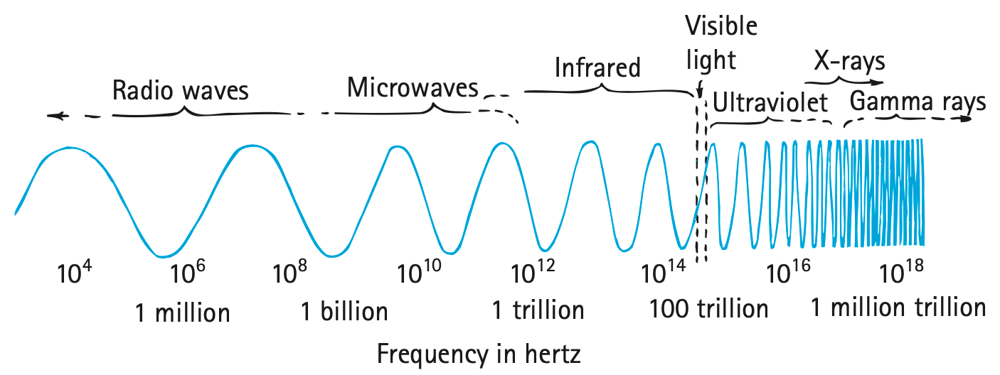
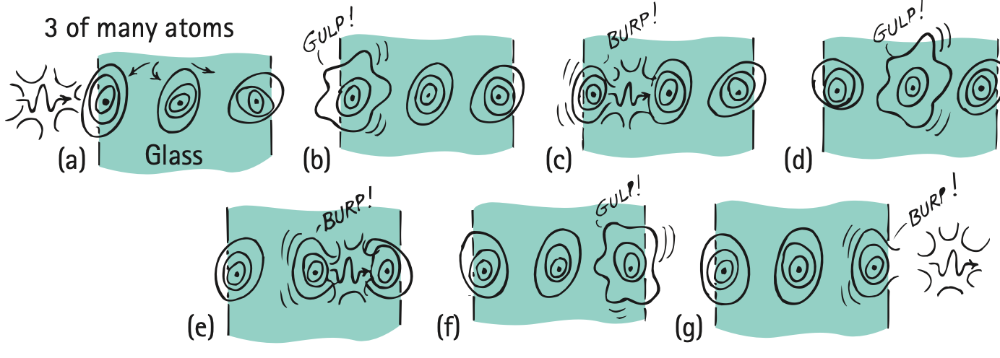
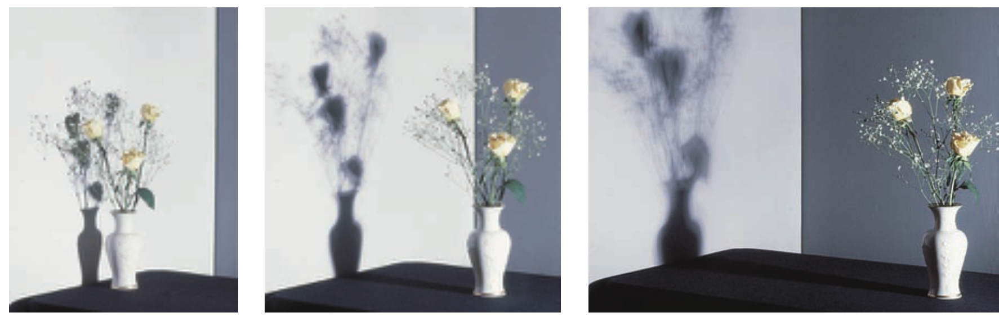

Nature of Light
Mathematical idea: When light travels at a fixed speed, frequency and wavelength must change in opposite directions, and travel time depends on distance and speed.
You will connect electromagnetic-wave models to the spectrum, materials, shadows, and the eye. The figures are evidence for what light does even when the light itself cannot be seen traveling.
Learning Target
Students will explain light as electromagnetic radiation and describe how light travels, interacts with matter, forms shadows, and allows vision.
I can statements
- I can explain that light is an electromagnetic wave.
- I can describe the relationship between wavelength, frequency, and wave speed.
- I can identify visible light as one part of the electromagnetic spectrum.
- I can distinguish transparent, translucent, and opaque materials.
- I can explain how shadows form when light is blocked.
- I can explain that we see objects when light from them enters our eyes.
Vocabulary
These are words you will see in this section. Do not define them yet.
- electromagnetic wave
- electromagnetic spectrum
- wavelength
- frequency
- transparent
- translucent
- opaque
- ray
- umbra
- penumbra
- retina
Use the preview activity to decide which words you already know, recognize, or do not know yet. Watch for these words in bold when they are first introduced or defined in the reading.
Preview: Skim Before You Read
Directions
Before reading closely, skim the vocabulary list and the section. Look at titles, headings, bold words, pictures, captions, diagrams, tables, and formulas. Do not try to understand everything yet. Your job is to notice what already looks familiar and make predictions about what this section may explain.
Step 1 — Sort the vocabulary. Write each vocabulary word in the column that best matches what you know right now. You may move a word later.
| Know for sure | Recognize | Don’t know yet |
|---|---|---|
Step 2 — Skim the section. Record what catches your attention before you read closely.
| What I noticed | |
|---|---|
| What I predict | |
| What I wonder |
Content: Read, Look, Annotate, Apply
Directions
Read in short chunks. Annotate the prose and the figures together: underline evidence, circle or highlight bold vocabulary, label arrows or measured features, connect a sentence to an image, and write short questions or connections in the margins.
Reading 1: Fields That Carry Energy Through Space
Maxwell’s model connects light to electricity and magnetism. When an electric charge vibrates, its changing electric influence and magnetic influence can move outward together. This traveling disturbance is an electromagnetic wave. Unlike a sound wave, it does not need air, water, or another material medium. The changing fields carry energy through empty space.

Image read: Trace the outward disturbance around the charged rod. Mark the source motion and the direction the disturbance moves.
The figure emphasizes an important difference between the motion that creates the wave and the motion of the wave itself. The charged object moves back and forth locally, while the electromagnetic disturbance travels away from it. Energy is transferred outward; the original charged object does not travel with the light.

Image read: Label the electric field, magnetic field, and direction of travel. Notice that the two fields are perpendicular to each other and to the direction the wave moves.
In a vacuum, electromagnetic radiation travels at about 300,000 km/s, or $3.0\times10^8\text{ m/s}$. The textbook explains that Maxwell obtained this speed from electromagnetic relationships and recognized that it matched the measured speed of light. All electromagnetic radiation in a vacuum shares this same speed.
Stop and Discuss
- What evidence in the two figures supports the claim that light is an electromagnetic wave rather than a stream of matter moving from the source?
- The charged rod moves back and forth, but the wave moves outward. Explain why those are two different motions.
Teacher support: The charge vibrates locally while the electric/magnetic disturbance propagates outward. Students should distinguish source motion from wave/energy transfer.
For electromagnetic waves in a vacuum:
$$c=f\lambda$$$c$ is the speed of light, $f$ is frequency, and $\lambda$ is wavelength. For ordinary travel-time reasoning we may also use:
$$v=\frac{d}{t}$$These are models of relationships: the first connects wave properties; the second connects distance, time, and speed.
Example 1: A radio wave in space
An electromagnetic wave in space has a frequency of 100 MHz. Without calculating the exact wavelength, explain what the equation $c=f\lambda$ says must happen to wavelength if the frequency becomes larger while the wave remains in vacuum.
- What quantity stays constant in a vacuum?
- If frequency increases, what must happen to wavelength? Explain using the relationship, not just a memorized rule.
Teacher support: In vacuum c stays constant. If f increases, wavelength must decrease so the product remains c.
You Try It 1: Light travel time
Light travels 600,000 km through space. Use $c=300{,}000\text{ km/s}$ and $v=d/t$ to determine the travel time.
- Solve for the time and include units.
- Explain what your answer means about how far light travels each second.
Teacher support: t=d/v=600,000 km ÷ 300,000 km/s = 2 s. Listen for units and the interpretation that light covers about 300,000 km each second.
Reading 2: One Spectrum, Many Frequencies
Electromagnetic waves can be organized by their frequency, the number of wave cycles produced each second, and by their wavelength, the distance from one matching point on a wave to the next. Radio waves, microwaves, infrared, visible light, ultraviolet, X-rays, and gamma rays are not different kinds of wave at the deepest level. They are different regions of one continuous electromagnetic spectrum.

Image read: Locate visible light on the spectrum. Compare the width of the visible region with the much larger range of electromagnetic frequencies shown.
Visible light is only a tiny part of the spectrum. The lowest visible frequencies appear red and the highest visible frequencies appear violet. Electromagnetic waves above and below the visible range still carry energy even though human eyes do not respond to them as visible light.

Image read: Compare the spacing of the red and violet waves. Mark which color has the longer wavelength and which has the higher frequency.
Because all of these waves travel at the same speed in a vacuum, a higher frequency must go with a shorter wavelength. The figure makes this visible by showing violet with more cycles packed into the same horizontal distance than red. The relationship $c=f\lambda$ describes this tradeoff.
Stop and Discuss
- Use the spectrum figure to explain why visible light is not a separate kind of wave from radio or ultraviolet radiation.
- Use the red/green/violet figure as evidence: which visible color has the greater frequency, and how can you tell without numbers?
Teacher support: Visible light is one narrow frequency band of EM radiation. Violet has more cycles in the same distance, so it has higher frequency and shorter wavelength than red.
Example 2: Compare two colors
Two visible-light waves travel through vacuum. Wave A has a longer wavelength than Wave B.
- Which wave has the lower frequency?
- Explain why their speeds can still be equal.
Teacher support: Wave A has lower frequency. Both have the same vacuum speed c because f and λ trade off.
You Try It 2: Find a wavelength
A light wave has frequency $5.0\times10^{14}\text{ Hz}$. Using $c=3.0\times10^8\text{ m/s}$ and $c=f\lambda$, determine its wavelength.
- Rearrange the allowed relationship and calculate $\lambda$.
- Does your answer fit the idea that visible-light wavelengths are very small? Explain qualitatively.
Teacher support: λ=c/f=(3.0×10^8)/(5.0×10^14)=6.0×10^-7 m. Students need not name the color; focus on relationship and scale.
Reading 3: What Materials Do With Light
When light reaches matter, it interacts with charged particles in the material. In glass, incoming visible light can force electrons to vibrate. The model shows repeated absorption and reemission that transfers the light energy through the material. A material that lets visible light pass so that objects can be seen clearly through it is transparent.

Image read: Follow the energy from the incoming light to the atoms and then out the far side. Circle the places where the model shows interaction with matter.
Transparent does not mean “no interaction.” These interactions create tiny time delays that lower light’s average speed through glass. Glass can also behave differently for different parts of the spectrum: the same material that transmits visible light can strongly absorb other frequencies.

Image read: Mark which spectral ranges pass through the glass and which do not. Use the picture to reject the idea that a material is simply transparent to every kind of electromagnetic wave.
Most familiar objects are opaque to visible light: light does not pass through them. Much of the absorbed light becomes internal energy, and some surfaces also reflect light. A third classroom category, translucent, describes partial transmission in which light gets through but a clear image does not. A later pinhole-camera activity uses semitransparent tracing or tissue paper as this kind of partially transmitting screen.
Stop and Discuss
- What part of the glass model proves that transparent materials still interact with light?
- A pane of glass transmits visible light but blocks ultraviolet in the figure. What does that show about using the words transparent and opaque?
Teacher support: The model explicitly shows repeated interaction. A material’s transmission depends on frequency; glass can be transparent to visible while opaque to UV/IR.
Example 3: Classify three materials
A clear window gives a sharp view outside, tracing paper glows when light is behind it but blurs details, and a wooden door does not let visible light through.
- Classify each as transparent, translucent, or opaque.
- For each material, describe what happens to the visible light reaching it.
Teacher support: Clear window = transparent; tracing paper = translucent; wooden door = opaque. Students should describe transmission quality, not just labels.
You Try It 3: Critique a claim about glass
A student says, “Glass is transparent, so light passes through without interacting with the glass.”
- Identify the error in the claim.
- Use the absorption/reemission model to write a corrected explanation.
Teacher support: Corrected idea: visible light interacts with electrons in glass; energy is transferred through absorption/reemission with delays, so average speed is lower.
Reading 4: Rays, Shadows, and the Light That Reaches Your Eye
A narrow beam is often represented as a ray, a line showing the direction light travels. When an opaque object blocks some rays while nearby rays continue, the region behind the object receives less light. A shadow is therefore not a substance made of “darkness”; it is evidence that some light paths have been blocked.

Image read: Compare the two shadows. Mark which source produces the sharper boundary and connect that difference to the range of ray directions reaching the object.
The darkest part of a shadow, where the source is completely blocked, is the umbra. The lighter edge region, where only part of an extended source is blocked, is the penumbra. Moving the object farther from the receiving wall can widen the penumbra and make the shadow less distinct.

Image read: Follow the sequence from close to far. Mark the change in the sharp central shadow and the blurred edge region.
Vision completes the story. Light enters the eye through the cornea and pupil, is focused by the eye’s optical system, and reaches the retina at the back of the eye. The retina contains light-sensitive cells that send information toward the brain. For clear vision, the incoming light must be focused on the retina.

Image read: Trace a possible path from the cornea to the retina. Then connect that path to the statement “we see an object when light from it enters our eyes.”
A glowing source sends light directly. A non-glowing object is visible when light from another source reaches the object and some of that light is sent toward your eyes. The eye is a receiver; it does not send out a seeing ray to touch objects.
Stop and Discuss
- Use the shadow figures to explain why a large nearby source can make a blurrier shadow edge than a small source.
- Use the eye figure to explain what must happen to light before you can see a non-glowing object such as a book.
Teacher support: A larger/closer extended source sends rays from more directions, so partial blocking creates a wider penumbra. Seeing requires light from a source to reach the object and then enter the eye.
Example 4: Move the object away from the wall
A ball is held between a broad lamp and a wall. The ball is moved farther from the wall while the lamp stays fixed.
- Predict how the penumbra changes.
- Explain the prediction using blocked and unblocked ray paths.
Teacher support: Moving the ball farther from the wall generally broadens the penumbra and reduces shadow sharpness, matching Figure 26.13.
You Try It 4: How do you see the page?
You can read a page under a ceiling light even though the page does not glow.
- Describe the path of light from the source to the page to your eye.
- What misconception is corrected by saying that the eye is a receiver of light?
Teacher support: Ceiling light → page → reflected/reemitted light → eye/retina. Correct the emission theory that eyes send rays outward.
Vocabulary: Define the Terms
You have now seen these words in the reading, images, and practice. Use this table to consolidate the physics meaning of each term.
| Vocabulary term | Definition |
|---|---|
| electromagnetic wave | A traveling disturbance of electric and magnetic fields that carries energy and can move through a vacuum. |
| electromagnetic spectrum | The continuous range of electromagnetic waves classified mainly by frequency and wavelength. |
| wavelength | The distance between matching points on successive waves. |
| frequency | The number of wave cycles produced or passing a point each second. |
| transparent | Allowing visible light to pass so a clear image can be seen through the material. |
| translucent | Allowing some visible light through while scattering it enough that a clear image is not transmitted. |
| opaque | Not allowing visible light to pass through the material. |
| ray | A line model showing the direction light travels. |
| umbra | The darkest part of a shadow where the light source is completely blocked. |
| penumbra | A partially shadowed region where only part of an extended light source is blocked. |
| retina | The light-sensitive layer at the back of the eye where focused light is detected. |
Summary
- Light is electromagnetic radiation: changing electric and magnetic fields carry energy through space.
- In vacuum, $c=f\lambda$; when $c$ is constant, higher frequency means shorter wavelength.
- Visible light is a tiny region of the electromagnetic spectrum.
- Transparent, translucent, and opaque describe different amounts/qualities of light transmission; transparent materials still interact with light.
- Shadows form where objects block ray paths; an umbra is fully shadowed and a penumbra is partially shadowed.
- We see when light from a source or illuminated object enters the eye and is focused onto the retina.
Teacher support: Summary emphasis: Light is electromagnetic radiation: changing electric and magnetic fields carry energy through space. In vacuum, $c=f\lambda$; when $c$ is constant, higher frequency means shorter wavelength. Visible light is a tiny region of the electromagnetic spectrum.
Common Mistakes
| Mistake | Why it is tempting | Check instead |
|---|---|---|
| “Higher-frequency light moves faster in vacuum.” | Higher frequency often sounds like “more” of everything. | In vacuum all EM waves share speed c; frequency changes are paired with wavelength changes. |
| “Transparent means no interaction.” | A clear window looks as if light simply passes untouched. | Use the glass model: electrons respond and energy is reemitted, producing an average-speed delay. |
| “A shadow is darkness traveling outward.” | The shadow region looks like a thing on the wall. | Trace the blocked ray paths; the shadow is a region receiving less or no source light. |
| “Eyes send something out to see.” | Looking feels active and directed. | Trace light from source/object into the eye and to the retina. |
Which term describes a material that lets some light pass but does not transmit a clear image: transparent, translucent, or opaque?
A small object is moved farther from a wall while a broad light source stays fixed. Predict one change in its shadow and explain the change using ray paths.
What is one thing you learned in this section? Explain it in at least one complete sentence.
What is one thing from this section you still need to understand or practice more? Be specific.